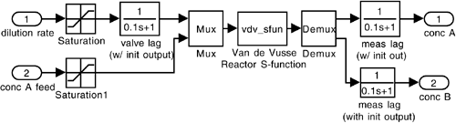

| [ Team LiB ] |
|
M3.4 SIMULINK sfun (.mdl Files)—AdvancedThe previous example of the use of SIMULINK and S-functions was quite limited. In the example, process parameters were imbedded in the S-function (.m file). Parameters can be passed through argument lists, so that the same files can be used for many different systems by simply changing parameter values. Some more advanced features are illustrated in the example below. Example M3.3: Van de Vusse Reactor ExtendedThe SIMULINK diagram shown in Example M3.2 (Figure M3-2) merely re-created the same simulation (perturbation of initial conditions from steady state) as the MATLAB ode file from Example M3.1. A real power of SIMULINK is to create complex block diagrams with additional lags on sensors and actuators and to apply changes to the input variables. The SIMULINK .mdl file shown in Figure M3-2 is revised, as shown in Figure M3-3. The "Van de Vusse Reactor" block is actually a subsystem that contains the S-function to simulate the reactor, and additional lags for sensors and actuators. Double clicking to "open up" this subsystem yields the diagram shown in Figure M3-4. Constraints are placed on the input variables to assure that they remain within physical bounds. Notice that the lags are represented by special transfer function blocks that do not require the inputs and outputs of the blocks to be in deviation variable form. These special blocks can be obtained by opening the Blocksets & Toolboxes block on the Library: simulink, then choosing simulink extras and additional linear. Figure M3-3. SIMULINK diagram for an open-loop simulation of the van de Vusse reactor. The simulation diagram of Figure M3-2 has been extended. The "Van de Vusse Reactor" block is composed of a "subsystem" shown in Figure M3-4.Figure M3-4. The subsystem of the block shown in Figure M3-3. Notice that addition actuator and sensor lags have been placed on the diagram. Kinetic parameters are passed into the S-function file by adding the parameters after x0 in the argument list: function [sys,x0,str,ts] = vdv_sfun(t,x,u,flag,x0,k1,k2,k3) The values of the kinetic parameters are then entered in the MATLAB command window before beginning the simulation. The simulation diagram of Figure M3-3 is "run" by entering the initial conditions in a MATLAB command window: » x0 = [3.0;1.117]; Setting the dilution rate step function to move from 4/7 to 4/7 + 0.1 at t = 1 minute, run the simulation, then enter the following commands to obtain the plots shown in Figure M3-5.
» subplot(2,1,1),plot(t,ca)
» xlabel('time, min')
» ylabel('ca, mol/liter')
» subplot(2,1,2),plot(t,cb)
» xlabel('time, min')
» ylabel('cb, mol/liter')
Figure M3-5. Responses of the concentration of A and B to a small step change in the dilution rate (from 4/7 to 4/7 + 0.1 min-1).Notice the characteristic inverse response shown in bottom plot. |
| [ Team LiB ] |
|